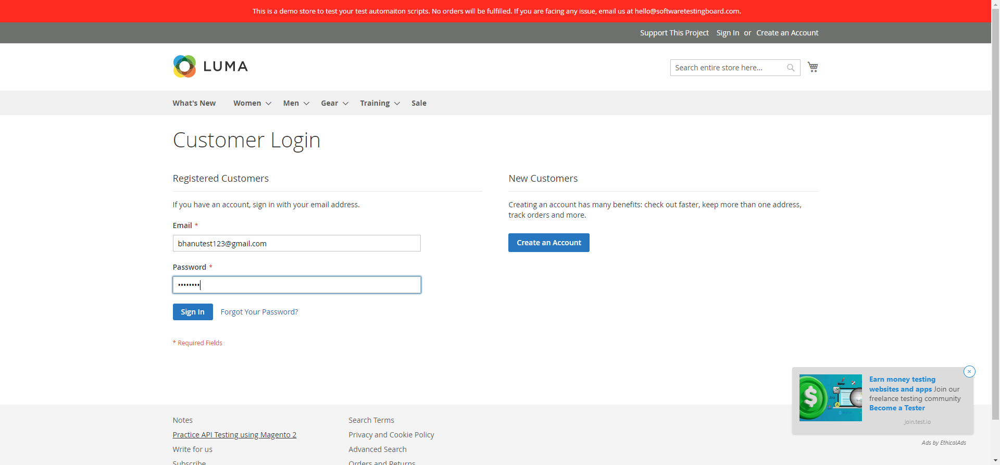
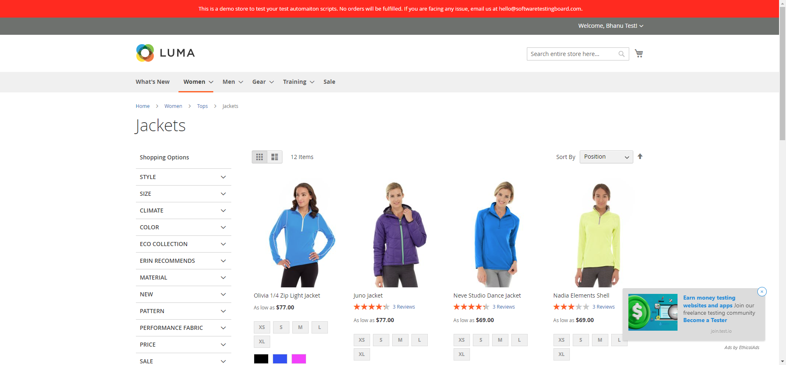
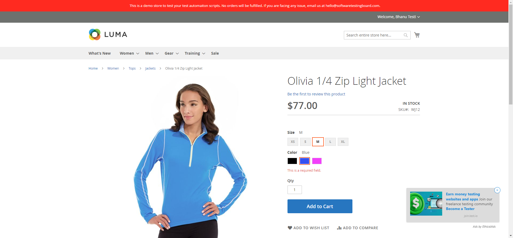
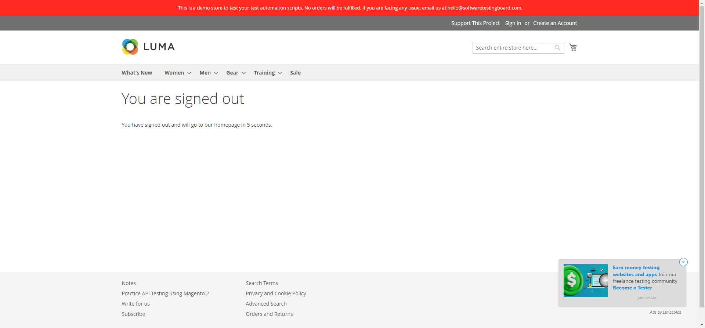
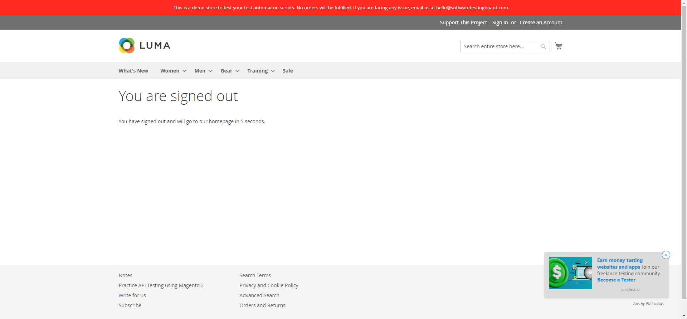

-
Add to cart
7:13:09 PM / 00:00:27:526 Fail
Add to cart
09.05.2024 7:13:09 PM 09.05.2024 7:13:36 PM 00:00:27:526 · #test-id=1PassSuccessful Login1 with Valid CredentialsGiven the user navigates to login pagestepdefinitions.Hooks.addScreenshot(io.cucumber.java.Scenario)Successful Login1 with Valid CredentialsWhen user enters email as "bhanutest123@gmail.com" and password as "test@123"stepdefinitions.Hooks.addScreenshot(io.cucumber.java.Scenario)Successful Login1 with Valid CredentialsAnd the user clicks on the Login buttonstepdefinitions.Hooks.addScreenshot(io.cucumber.java.Scenario)Successful Login1 with Valid CredentialsThen the user should be logged in succesfullystepdefinitions.Hooks.addScreenshot(io.cucumber.java.Scenario)Successful Login1 with Valid CredentialsPassSuccessful landing on category pageGiven the user is loggedin and navigates to the Home pagestepdefinitions.Hooks.addScreenshot(io.cucumber.java.Scenario)Successful landing on category pageWhen navigates through category menustepdefinitions.Hooks.addScreenshot(io.cucumber.java.Scenario)Successful landing on category pageAnd the user clicks on the Jackets categorystepdefinitions.Hooks.addScreenshot(io.cucumber.java.Scenario)Successful landing on category pageThen the user should be redirected to the Jackets Pagestepdefinitions.Hooks.addScreenshot(io.cucumber.java.Scenario)Successful landing on category pagePassSuccessful landing on Product pageGiven the user lands on the category Pagestepdefinitions.Hooks.addScreenshot(io.cucumber.java.Scenario)Successful landing on Product page When the user clicks on the Jackets Ziplight productstepdefinitions.Hooks.addScreenshot(io.cucumber.java.Scenario)Successful landing on Product pageThen the user should be redirected to the Ziplight Jacket's productPagestepdefinitions.Hooks.addScreenshot(io.cucumber.java.Scenario)Successful landing on Product page
When the user clicks on the Jackets Ziplight productstepdefinitions.Hooks.addScreenshot(io.cucumber.java.Scenario)Successful landing on Product pageThen the user should be redirected to the Ziplight Jacket's productPagestepdefinitions.Hooks.addScreenshot(io.cucumber.java.Scenario)Successful landing on Product page FailAdd product to cartGiven the user lands on the category Pagestepdefinitions.Hooks.addScreenshot(io.cucumber.java.Scenario)Add product to cart
FailAdd product to cartGiven the user lands on the category Pagestepdefinitions.Hooks.addScreenshot(io.cucumber.java.Scenario)Add product to cart When the user selects the sizestepdefinitions.Hooks.addScreenshot(io.cucumber.java.Scenario)Add product to cartAnd the user selects the colorStep skippedAnd the user clicks on the Addtocart buttonStep skippedThen the Product should be successfully added to the cartStep skippedAnd cartvalue should be incemented by oneStep skipped
When the user selects the sizestepdefinitions.Hooks.addScreenshot(io.cucumber.java.Scenario)Add product to cartAnd the user selects the colorStep skippedAnd the user clicks on the Addtocart buttonStep skippedThen the Product should be successfully added to the cartStep skippedAnd cartvalue should be incemented by oneStep skipped -
order Product
7:13:36 PM / 00:02:05:919 Fail
order Product
09.05.2024 7:13:36 PM 09.05.2024 7:15:42 PM 00:02:05:919 · #test-id=40FailProceed to CheckoutGiven the Product is successfully added to cartstepdefinitions.Hooks.addScreenshot(io.cucumber.java.Scenario)Proceed to CheckoutWhen user clicks on the Proceed to check out buttonstepdefinitions.Hooks.addScreenshot(io.cucumber.java.Scenario)Proceed to CheckoutThen user should be navigated to checkout PageStep skippedFailPlace orderGiven the product is available on the checkout Pagestepdefinitions.Hooks.addScreenshot(io.cucumber.java.Scenario)Place order When the user clicks on the next buttonstepdefinitions.Hooks.addScreenshot(io.cucumber.java.Scenario)Place order
When the user clicks on the next buttonstepdefinitions.Hooks.addScreenshot(io.cucumber.java.Scenario)Place order And the user clicks on the place order buttonStep skippedThen order should get placed and order confirmation page should be displayedStep skippedFailSuccessfull logoutGiven the order placed succesfullystepdefinitions.Hooks.addScreenshot(io.cucumber.java.Scenario)Successfull logoutWhen the user clicks on logout buttonstepdefinitions.Hooks.addScreenshot(io.cucumber.java.Scenario)Successfull logoutThen user successfully logged out message should be displayedstepdefinitions.Hooks.addScreenshot(io.cucumber.java.Scenario)
And the user clicks on the place order buttonStep skippedThen order should get placed and order confirmation page should be displayedStep skippedFailSuccessfull logoutGiven the order placed succesfullystepdefinitions.Hooks.addScreenshot(io.cucumber.java.Scenario)Successfull logoutWhen the user clicks on logout buttonstepdefinitions.Hooks.addScreenshot(io.cucumber.java.Scenario)Successfull logoutThen user successfully logged out message should be displayedstepdefinitions.Hooks.addScreenshot(io.cucumber.java.Scenario)
-
java.lang.NullPointerException
1 tests
java.lang.NullPointerException
1 failedStatus Timestamp TestName Fail 19:13:35 PM When the user selects the size Add to cart.Add product to cart.When the user selects the size -
org.openqa.selenium.NoSuchSessionException
1 tests
org.openqa.selenium.NoSuchSessionException
1 failedStatus Timestamp TestName Fail 19:15:42 PM stepdefinitions.Hooks.addScreenshot(io.cucumber.java.Scenario) order Product.Successfull logout.stepdefinitions.Hooks.addScreenshot(io.cucumber.java.Scenario) -
org.openqa.selenium.TimeoutException
1 tests
org.openqa.selenium.TimeoutException
1 failedStatus Timestamp TestName Fail 19:13:37 PM When user clicks on the Proceed to check out button order Product.Proceed to Checkout.When user clicks on the Proceed to check out button -
org.openqa.selenium.json.JsonException
1 tests
org.openqa.selenium.json.JsonException
1 failedStatus Timestamp TestName Fail 19:14:58 PM When the user clicks on the next button order Product.Place order.When the user clicks on the next button
Started
Sep 5, 2024 07:12:54 PM
Ended
Sep 5, 2024 07:15:42 PM
Features Passed
0
Features Failed
2
Features
Scenarios
Steps
Timeline